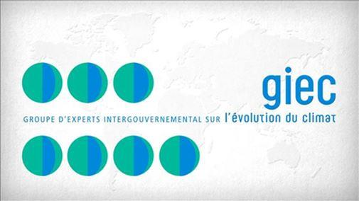

Le labyrinthe des non-dits ou les arcanes de la transition électro-écologique
par Marc GOOSSENS
Le titre de ce court éditorial est inspiré d’un film allemand de 2014 – « Im Labyrinth des Schweigens » – dans lequel un jeune procureur recherche des pièces décisives sur les camps de la mort d’Auschwitz ( film inspiré de ce que l’on a appelé de « Second procès d’Auschwitz », qui s’est déroulé de décembre 1963 à août 1965 ).
La version française de ce film a été intitulée « Le labyrinthe du silence », contre « Labyrinth of Lies » pour la version anglaise. La différence entre ces deux titres n’est qu’apparente car, si le substantif allemand « Schweigen » se traduit bien par ‘silence’, le verbe allemand « schweigen » (comme le verbe néerlandais « zwijgen ») , lui, veut dire « taire, garder le silence ». Le substantif ‘silence’, ici, n’est donc pas pris dans le sens d’absence de bruit, mais dans celui d’omission plus ou moins volontaire – voire de rétention – de certaines informations, … d’où mon utilisation du terme « non-dits » dans le titre ci-dessus.
Dans toute forme de communication relativement élaborée, les non-dits sont souvent plus significatifs des intentions réelles du (ou des) « communicateur(s) » que ce qui est explicitement communiqué. Mais il faut bien reconnaître qu’il est beaucoup plus facile de se limiter à la communication explicite que de se mettre à rechercher systématiquement tout ce qui n’a pas été dit et à supputer – avec les difficultés et les risques d’erreur que cela comporte – la nature et l’importance de ce qui a été omis. C’est pourquoi, dans notre monde – y compris le monde politique – les moutons de Panurge sont bien plus nombreux que les autres.
Je ne ferai que rapidement citer les non-dits dans la communication du GIEC : que le GIEC n’est pas un organisme scientifique (il ne fait aucune recherche et ne développe aucune théorie), mais un organisme gouvernemental ; que le GIEC ne compile que les articles scientifiques qui vont dans le sens de sa mission … et rejette tous les autres ; que les modèles utilisés dans les articles retenus, non seulement n’imputent le réchauffement actuellement observé qu’aux seuls gaz à effet de serre et rejettent toutes les autres explications plausibles, mais encore utilisent une théorie contestable de l’interaction entre le rayonnement infrarouge terrestre et les molécules de gaz à effet de serre ; et enfin que ces modèles sont incapables d’expliquer les variations passées – même récentes – du climat de la terre. Il en résulte que les « prévisions » qu’ils en tirent ne peuvent pas être targuées de scientifiques et donc servir de base à une politique sérieuse. C’est sur base de ces non-dits que le monde occidental s’engage avec détermination dans la coûteuse décarbonisation.
Dans un domaine connexe, et seulement au niveau de la Belgique, je voudrais appliquer le même type de réflexion au « Plan SOPHIA », un plan de transition pour la Belgique élaboré par le « Resilience Management Group » et présenté en mai de cette année. Sa lecture me fait penser au titre d’un autre film, « Tout le monde il est beau, tout le monde il est gentil », une comédie satirique réalisée par Jean Yanne en 1972.
En effet, la lecture de son résumé introductif nous permet déjà d’apprécier toute une panoplie de « belles et gentilles choses » : « … éviter de tomber dans une grave crise sociale … prévenir une dégradation du climat et de l’environnement qui menacerait l’humanité tout entière 1 … sortir de cette crise ‘par le haut’ 2… une réponse systémique et globale qui repositionne l’espèce humaine au sein de son écosystème naturel dont elle s’est éloignée par erreur et par méconnaissance 3… capitaliser sur les comportements vertueux 4 … une économie qui opère dans les limites de la planète 5 … des mesures économiques immédiates et radicales d’aide aux victimes de la récession économique … préserver le potentiel productif durable de l’économie … encourager les secteurs bénéfiques à la santé et à l’environnement … créer un plafond écologique et un plancher social entre lesquels les activités économiques puissent se développer harmonieusement 6 … prendre conscience des dangers du libre-échange 7… le plan de redéploiement économique devra donc s’accompagner d’une grand transparence de la vie politique, d’une révision des institutions et d’un approfondissement de la démocratie participative … établir un véritable pacte pour l’emploi … ». Mon Dieu, que tout cela sonne bien ! Comment ne pas approuver avec enthousiasme un plan aussi prometteur ?!
Malheureusement, comme le dit le proverbe, « l’enfer est pavé de bonnes intentions » et tout cet étalage de bonnes intentions omet soigneusement de faire référence aux contreparties que cette sorte de pacte politico-socio-économique 8 exigerait :
1. Le financement d’une telle politique, dans un pays déjà fortement endetté, ne pourrait être assuré qu’en allant chercher l’argent nécessaire dans la poche des citoyens et des entreprises, les uns comme les autres déjà fortement éprouvés par les mesures de confinement liées à l’épidémie de Covid-19.
2. Il ne faut pas s’y tromper : la mise en place d’une telle politique nécessitera une sérieuse limitation de nos libertés individuelles, surtout en matière de mobilité et de consommation d’énergie ; les technologies qui nous ont apporté le bien-être que nous avons connu jusqu’à présent seront remplacées par des technologies ne nous apportant qu’un bien-être nettement plus frugal.
3. Il y a lieu de s’inquiéter de certains points prévus dans ce plan, non seulement en matière d’enseignement ( préparer les jeunes aux alternatives … légitimer la critique constructive de la technique … intégrer les savoirs nécessaires pour accélérer une transition écologique et solidaire ), mais aussi et surtout dans la rubrique « transition intérieure » basée sur un travail de 18 mois réalisé par les secteurs de la militance environnementale et de la méditation ; si l’on y trouve quelques points positifs, j’y vois aussi une certain risque – ou plutôt un risque certain – de formatage des esprits plutôt que d’ouverture des esprits.
En résumé, ce « Plan SOPHIA » ne fait que traduire, à mes yeux, la volonté de ses auteurs de passer d’une politique économique ( qui, depuis le début de la révolution industrielle, a été essentiellement basée sur l’innovation technologique – et donc sur les métiers des ingénieurs – et sur l’économie de marché, et qui nous a permis d’accéder à un niveau de bien-être confortable et à d’importants progrès sociétaux ) à une politique économique planifiée, dont les rares exemples historiques ont démontré les limitations, voire les échecs y compris environnementaux. Certes, cela ne veut pas dire qu’il n’y ait pas des choses à changer dans les politiques économiques « à l’occidentale », mais je ne crois pas qu’une économie planifiée, avec toutes les mesures coercitives que cela implique, puisse constituer une solution valable.
Bien entendu, toutes ces considérations personnelles n’engagent pas la SEII, ni tous ses membres.
M.G.
NOTES ET RÉFÉRENCES
1. Il ne faut pas tomber dans le travers du manichéisme qui consiste à dire qu’il n’y a qu’une seule solution à ces menaces ( qui devraient d’ailleurs être mieux précisées ).
2. On risque surtout de « tomber de haut » !
3. « Vanitas vanitatum et omnia vanitas » : quelle vanité de prétendre mieux savoir que les autres !
4. Que je sache, ce n’est pas la vertu qui a fait progresser le monde.
5. Tout comme le futur du fœtus ne se trouve pas à l’intérieur de l’utérus, le futur de l’humanité ne se situe pas dans les limites de sa planète, mais dans l’espace qui l’entoure ; dans un cas comme dans l’autre, ne pas permettre de franchir ces limites mène à une mort certaine.
6. Quelle naïveté dans ce propos : ce serait bien la première fois que l’on verrait des activités humaines se développer harmonieusement !
7. C’est bizarre comme le mot ‘libre’ en dérange certains !
Pour continuer à faire référence à des productions artistiques, je pourrais à ce sujet citer celles – nombreuses – inspirées par la légende de Faust pactisant avec le diable (sous la figure de Méphistophélès).
Partager cette page